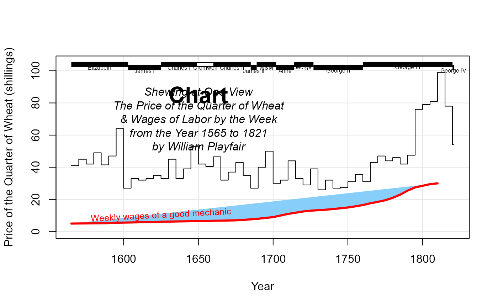
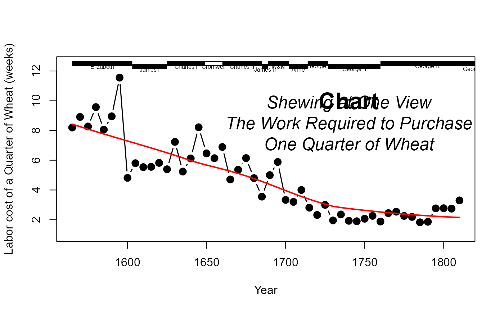

Playfair (1821) used a graph, showing parallel time-series of the price of wheat and the typical weekly wage for a "good mechanic" from 1565 to 1821 to argue that working men had never been as well-off in terms of purchasing power as they had become toward the end of this period.
His graph is a classic in the history of data visualization, but commits the sin of showing two non-commensurable Y variables on different axes. Scatterplots of wages vs. price or plots of ratios (e.g., wages/price) are in some ways better, but both of these ideas were unknown in 1821.
In this version, information on the reigns of British monarchs is provided
in a separate data.frame, Wheat.monarch.
Format
Wheat A data frame with 53 observations on the following 3
variables.
YearYear, in intervals of 5 from 1565 to 1821: a numeric vector
WheatPrice of Wheat (Shillings/Quarter bushel): a numeric vector
WagesWeekly wage (Shillings): a numeric vector
Wheat.monarchs A data frame with 12 observations on the following 4
variables.
nameReigning monarch, a factor with levels
AnneCharles ICharles IICromwellElizabethGeorge IGeorge IIGeorge IIIGeorge IVJames IJames IIW&MstartStarting year of reign, a numeric vector
endStarting year of reign, a numeric vector
commonwealthA binary variable indicating the period of the Commonwealth under Cromwell
Source
Playfair, W. (1821). Letter on our Agricultural Distresses, Their Causes and Remedies. London: W. Sams, 1821
Data values: originally digitized from http://datavis.ca/gallery/images/playfair-wheat1.gif now taken from http://mbostock.github.io/protovis/ex/wheat.js
{kind=link}
References
Friendly, M. & Denis, D. (2005). The early origins and development of the scatterplot Journal of the History of the Behavioral Sciences, 41, 103-130.
Examples
data(Wheat)
# ------------------------------------
# Playfair's graph, largely reproduced
# ------------------------------------
# convenience function to fill area under a curve down to a minimum value
fillpoly <- function(x,y, low=min(y), ...) {
n <- length(x)
polygon( c(x, x[n], x[1]), c(y, low, low), ...)
}
# For best results, this graph should be viewed with width ~ 2 * height
# Note use of type='s' to plot a step function for Wheat
# and panel.first to provide a background grid()
# The curve for Wages is plotted after the polygon below it is filled
with(Wheat, {
plot(Year, Wheat, type="s", ylim=c(0,105),
ylab="Price of the Quarter of Wheat (shillings)",
panel.first=grid(col=gray(.9), lty=1))
fillpoly(Year, Wages, low=0, col="lightskyblue", border=NA)
lines(Year, Wages, lwd=3, col="red")
})
# add some annotations
text(1625,10, "Weekly wages of a good mechanic", cex=0.8, srt=3, col="red")
# cartouche
text(1650, 85, "Chart", cex=2, font=2)
text(1650, 70,
paste("Shewing at One View",
"The Price of the Quarter of Wheat",
"& Wages of Labor by the Week",
"from the Year 1565 to 1821",
"by William Playfair",
sep="\n"), font=3)
# add the time series bars to show reigning monarchs
# distinguish Cromwell visually, as Playfair did
with(Wheat.monarchs, {
y <- ifelse( !commonwealth & (!seq_along(start) %% 2), 102, 104)
segments(start, y, end, y, col="black", lwd=7, lend=1)
segments(start, y, end, y, col=ifelse(commonwealth, "white", NA), lwd=4, lend=1)
text((start+end)/2, y-2, name, cex=0.5)
})

# -----------------------------------------
# plot the labor cost of a quarter of wheat
# -----------------------------------------
Wheat1 <- within(na.omit(Wheat), {Labor=Wheat/Wages})
with(Wheat1, {
plot(Year, Labor, type='b', pch=16, cex=1.5, lwd=1.5,
ylab="Labor cost of a Quarter of Wheat (weeks)",
ylim=c(1,12.5));
lines(lowess(Year, Labor), col="red", lwd=2)
})
# cartouche
text(1740, 10, "Chart", cex=2, font=2)
text(1740, 8.5,
paste("Shewing at One View",
"The Work Required to Purchase",
"One Quarter of Wheat",
sep="\n"), cex=1.5, font=3)
with(Wheat.monarchs, {
y <- ifelse( !commonwealth & (!seq_along(start) %% 2), 12.3, 12.5)
segments(start, y, end, y, col="black", lwd=7, lend=1)
segments(start, y, end, y, col=ifelse(commonwealth, "white", NA), lwd=4, lend=1)
text((start+end)/2, y-0.2, name, cex=0.5)
})
